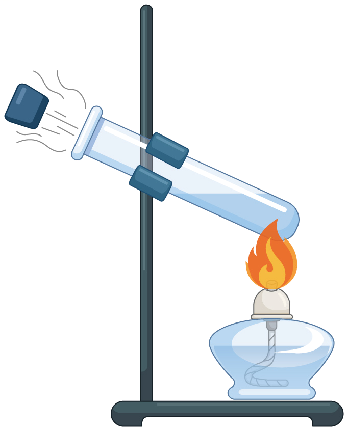
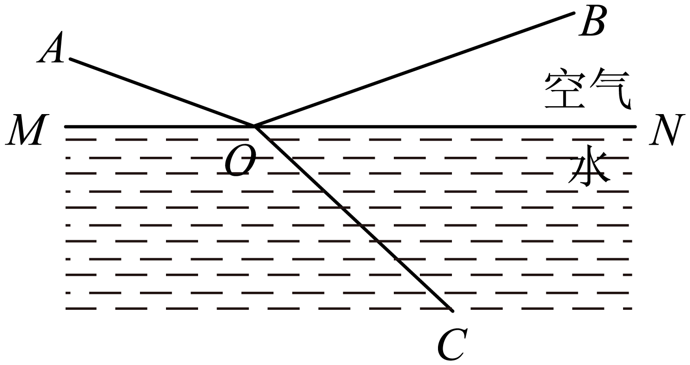
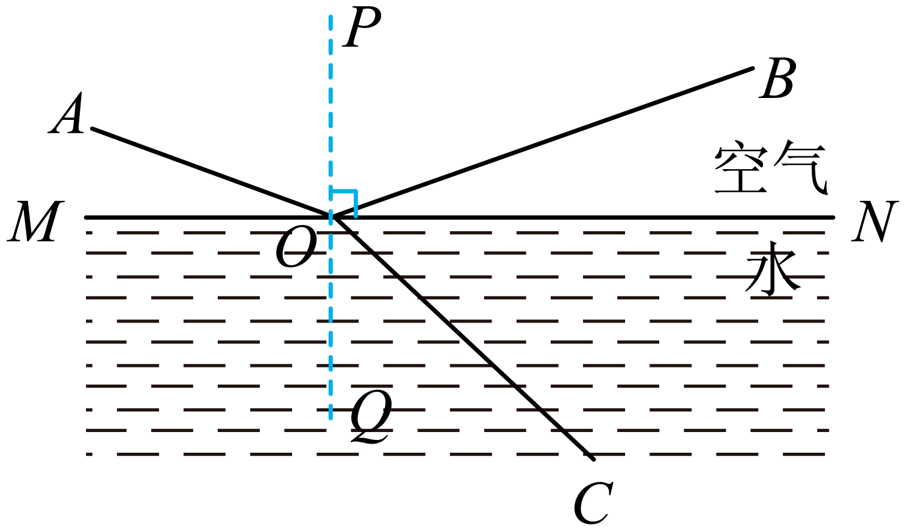
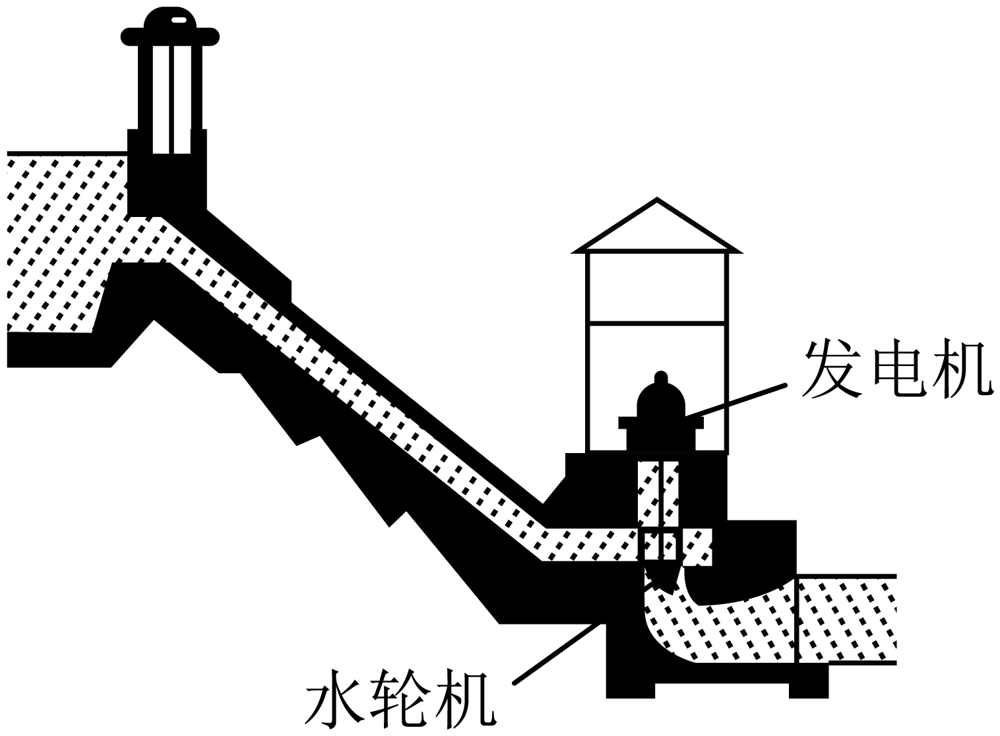
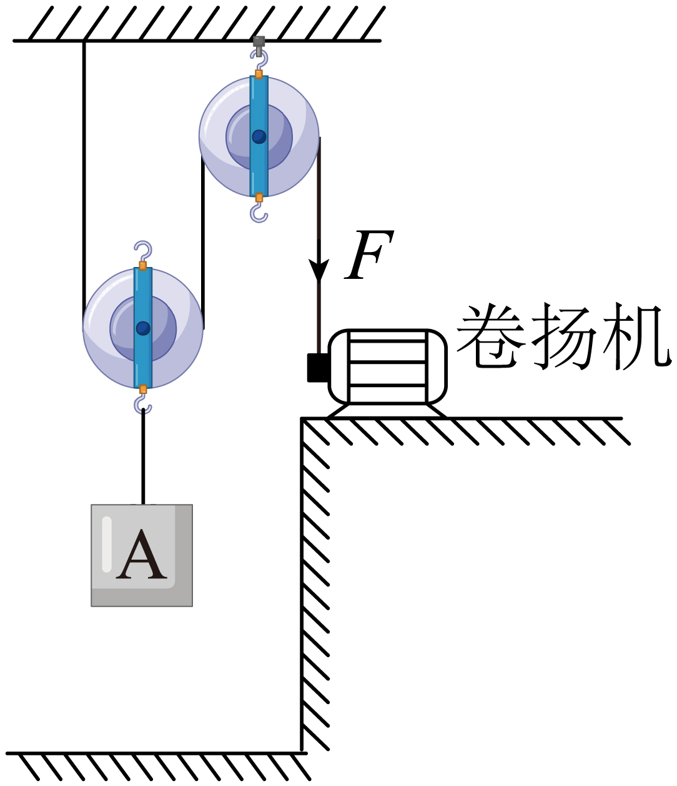
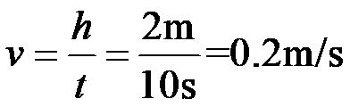
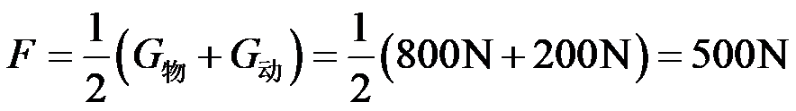
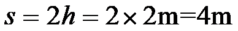
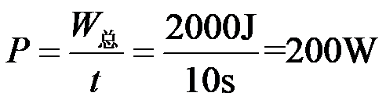
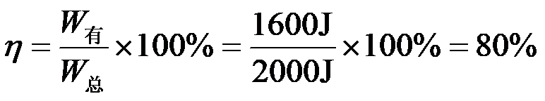

2023年北京市中考物理试题 · 选择题 第6、7、8、9、10题 · 对应解析
6. 如图所示，在试管内装适量水，用橡胶塞塞住管口，将水加热一段时间后，橡胶塞被推出，管口出现大量“白气”。下列说法正确的是（ ）

A. 管口出现的“白气”是水蒸气
B. 水蒸气推出橡胶塞导致水蒸气内能增加
C. 水被加热的过程中，其内能是通过做功的方式改变的
D. 水蒸气推出橡胶塞的过程中，橡胶塞的动能是由水蒸气的内能转化来的
【答案】D
【解析】
【详解】A．管口出现的“白气”是水蒸气液化成的小水滴，故A错误；
BD．水蒸气推出橡胶塞，水蒸气的内能转化为橡胶塞的机械能，水蒸气内能减小，故B错误，D正确；
C．水被火焰加热的过程中，其内能是通过热传递的方式改变的，故C错误。
故选D。
7. 如图所示，小京用水平推力推着购物车在水平地面上做匀速直线运动，下列说法正确的是（ ）
A. 小京对车的水平推力大于车受到的阻力
B. 车受到的支持力与车对地面的压力是一对平衡力
C. 若小京撤去对车的水平推力，车的运动状态将会发生改变
D. 若小京撤去对车的水平推力，小京仍对车做功
【答案】C
【解析】
【详解】A．购物车在水平地面上做匀速直线运动，购物车处于平衡状态。水平推力和阻力是二力平衡关系，应该相等，故A错误；
B．车受到的支持力受力物体是车，车对地面的压力受力物体时是地面，受力物体不同，所以它们不是一对平衡力，故B错误；
C．若小京撤去对车的水平推力，车在阻力作用下会慢慢停下，运动状态发生了改变，故C正确；
D．若小京撤去对车的水平推力，对车没有的力的作用，不再对车做功，故D错误。
故选C。
8. 一束单色光从空气斜射入水中的情境如图所示。下列说法正确的是（ ）

A. BO是入射光，OA是反射光
B. AO是入射光，OC是折射光
C. ∠AOM是入射角，∠BON是反射角
D. 光若沿CO入射，将沿OA和OB射出
【答案】B
【解析】
【详解】ABC．如图：过点O作法线PQ，由于反射时反射光线和入射光线位于法线两侧；折射时折射光线和入射光线也位于法线两侧，所以图中AO是入射光线、OB是反射光线、OC是折射光线。∠AOP是入射角，∠BOP是反射角，故B正确，AC错误；

D．折射时光路是可逆的，所以光若沿CO入射，将沿OA射出，故D错误。
故选B。
9. 如图所示，人们修筑拦河坝来提高上游的水位，在坝底安装水轮机带动发电机发电。上游一定量的水，经水轮机流到下游的过程中，下列说法正确的是（ ）

A. 水 机械能不变
机械能不变
B. 水的重力势能增大，动能减小
C. 水轮机带动发电机发电，电能转化成机械能
D. 上游水位越高，能够发出的电能越多
【答案】D
【解析】
【详解】AC．上游一定量的水，经水轮机流到下游的过程中，在水轮机处带动发电机发电。将水的机械能转化为电能，因此水的机械能减小，故AC错误；
B．上游一定量的水，经水轮机流到下游的过程中，水的质量不变，高度降低，重力势能减小，转化为水的动能，则水的动能增加，故B错误；
D．水电站发电时，上、下水位差越大，水的重力势能越大，能够转化的动能就越多，带动水轮机发出的电能就越多，故D正确。
故选D。
10. 用如图所示装置提升重为800N的物体A，动滑轮重为200N。在卷扬机对绳子的拉力F作用下，物体A在10s内竖直匀速上升了2m。在此过程中，不计绳重和摩擦，下列说法正确的是（ ）

A. 物体A上升的速度为0.4m/sB. 滑轮组的有用功为2000J
C. 拉力F的功率为100WD. 滑轮组的机械效率为80%
【答案】D
【解析】
【详解】A．物体A在10s内竖直匀速上升了2m，上升的速度为

故A错误；
B．装置提升重为800N的物体A，竖直匀速上升了2m，滑轮组的有用功为
故B错误；
C．由图知，n=2，不计绳重和轮与轴间的摩擦，拉力为

拉力端移动距离为

拉力做的总功
拉力做功的功率

故C错误；
D．滑轮组的机械效率为

故D正确。
故选D。